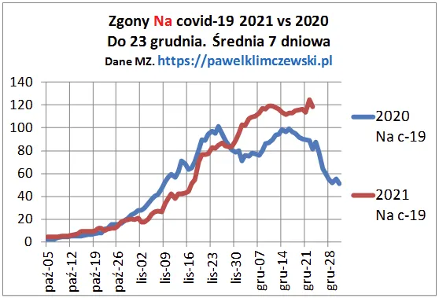
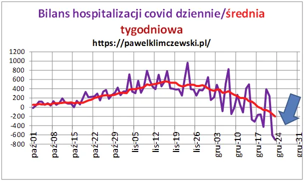

Jak zepsuć święta i jak się bronić.
Gdy zobaczyłem 247 zgonów "na covid" pomyślałem, że to dopiero początek i zajrzałem do mediów, czego zwykle nie robię. Szybko znalazłem! Znany wszystkim "strach na wróble" krzyczy, że zabraknie miejsca na stadionach dla umierających, bo ci szczepieni wiosną powinni brać kolejne dawki eliksiru nieśmiertelności.
Liczba 247 była możliwa, bo w weekend było 6 i 17 i ciągle średnio jest mniej niż 120, czyli typowy, zimowy poziom zgonów od chorób układu oddechowego na tle ponad 1500 innych. Blisko dwa lata temu pisałem, że granica 100 to żółta lampka. Niestety stan zdrowia naszych bliskich bardzo się pogorszył przez te prawie dwa lata. Skok na czerwonym wykresie i tak już rolowanych danych mówi nam: "to nie jest normalne, to nie jest zjawisko naturalne, to coś w danych".

Nie wymieniam nazwisk tych krzykaczy z "Rady", ale czasem słucham, co mówią i czekam cierpliwie. Nie sprawdziły się żadne z ich zapowiedzi poza takimi proroctwami jak: "ludzie będą umierać". Od miesiąca spada liczba covidowych hospitalizacji, co jest najlepszą miarą czegokolwiek. Oczywiście wiemy, że przetrzymują w szpitalach zdrowych ludzi pozytywnych, bo "lecą" za nich covidowe stawki, ale większa liczba wypisów niż wpisów jest najlepszą miarą jaką mamy.

Fakt, że szczyt zgonów jest spóźniony o miesiąc od szczytu dynamiki hospitalizacji jest bardzo dziwny, Powinno być to bliżej dwóch tygodni, bo po takim czasie średnio jest "wóz albo przewóz" czyli tzw. rozstrzygnięcie. Najpewniej w listopadzie było dużo pacjentów "bezobjawowych".
Retoryka straszenia stadionami jest wyjęta wprost z podręcznika sowieckiego propagandzisty i stosowana od dwóch lat już kilka razy w różnych krajach. Tymczasem w poprzednim poście zamieszczam piękną bożonarodzeniową pieśń tureckich chrześcijan. Są to słowa psalmów i Izajasza. Postarajmy się najbliższe dni przeżyć bez głównego ścieku, który próbuje nam psuć to, co mamy najcenniejsze. Jeśli to nosimy naprawdę w sercach, to nic nam nie grozi.
Zajrzyjmy do dobrej lektury, może to być Izajasz.
Paweł Klimczewski